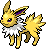

-
Bulbasaur #001

- Grama
- Veneno
Há uma semente de planta em suas costas desde o dia que este Pokémon nasce. A semente cresce lenteamente.
-
Ivysaur #002

- Grama
- Veneno
Quando o bulbo em suas costas cresce, parece perder a capacidade de ficar de pé em suas patas traseiras.
-
Venusaur #003

- Grama
- Veneno
Sua planta floresce quando está absorvendo energia solar. Ele permanece em movimento para buscar a luz solar.
-
Charmander #004

- Fogo
Tem preferência por coisas quentes. Quando chove, diz-se que o vapor jorra da ponta de sua cauda.
-
Charmeleon #005

- Fogo
Tem uma natureza bárbara. Na batalha, ele chicoteia sua cauda ardente e corta com garras afiadas.
-
Charizard #006

- Fogo
Ele cospe fogo que é quente o suficiente para derreter pedregulhos. Pode causar incêndios florestais soprando chamas.
-
Squirtle #007

- Água
Quando ele retrai seu longo pescoço em sua concha, ele esguicha água com força vigorosa.
-
Wartortle #008

- Água
É reconhecido como um símbolo de longevidade. Se sua concha tem algas, esse Wartortle é muito antigo.
-
Blastoise #009

- Água
Ele esmaga seu inimigo sob seu corpo pesado para causar desmaios. Em uma pitada, ele se retirará dentro de sua concha.
-
Caterpie #010

- Inseto
Para proteção, ele libera um fedor horrível da antena em sua cabeça para afastar os inimigos.
-
Eevee #0133

- Normal
Sua capacidade de evoluir em muitas formas permite que ela se adapte suave e perfeitamente a qualquer ambiente.
-
Vaporeon #0134

- Água
Vive perto da água. Sua longa cauda é marcada por uma barbatana, que muitas vezes é confundida com a de uma sereia.
-
Jolteon #0135
- Eletrico
Ele concentra as fracas cargas elétricas emitidas por suas células e lança raios perversos.
-
Flareon #0136

- Fogo
O ar inalado é levado ao seu saco de chamas, aquecido e exalado como fogo que atinge mais de 3.000 graus Fahrenheit.
-
Mewtwo #0150

- Psiquico
Mewtwo é um Pokémon artificial. É um Pokémon humanóide bípede com algumas características felinas. É principalmente cinza com uma longa cauda roxa.
-
Espeon #0196

- Psiquico
A ponta de sua cauda bifurcada treme quando está prevendo o próximo movimento de seu oponente.
-
Umbreon #0197

- Sombrio
Quando exposto à aura da lua, os anéis em seu corpo brilham levemente e ele ganha um poder misterioso.
-
Leafon #0470

- Grama
Quando você vir Leafeon dormindo em um pedaço de sol, saberá que ele está usando a fotossíntese para produzir ar limpo.
-
Glaceon #0471

- Gelo
Ele pode controlar sua temperatura corporal à vontade. Isso permite que ela congele a umidade da atmosfera, criando rajadas de pó de diamante.